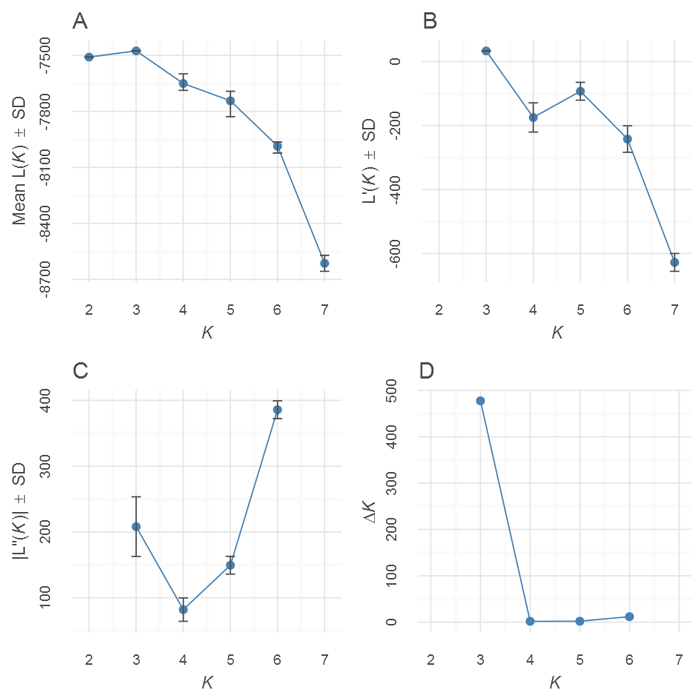
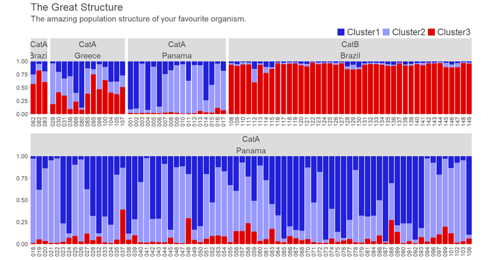

pophelper is an R package and web app to analyse and visualise population structure. pophelper curently supports output run files generated from population analysis programs such as STRUCTURE, TESS, TESS3, BAPS and numeric delimited formats such as ADMIXTURE or fastSTRUCTURE. The pophelper package can be used to read run files to R, tabulate runs, summarise runs, estimate K using the Evanno method, align clusters within and across K and generate barplot figures.
For a detailed demonstration and walkthrough, refer the online vignette. For information about changes in the latest version, visit this GitHub page.
Latest changes
- Fixed a bug in Evanno plot. Error bars on the first plot showed MIN/MAX rather than SD. This has been fixed to show SD.
- All functions that export content must have
exportpathspecified explicitly. -
catandprintstatements replaced withmessageorwarning - Argument ‘quiet’ removed in all functions
Installation
You need to have R (>= 3.5) statistical package installed on your system. R is open-source and freely available to download for Windows, Mac and other OS.
Linux users may need some extra OS specific dependencies. Here are the libraries for Debian (Ubuntu etc).
sudo apt install -y libfreetype6-dev libcurl4-openssl-dev libssl-dev libxml2-dev libnlopt-devMac users may also need to install openssl. Then, install the dependency R packages.
# install dependencies
install.packages(c("ggplot2","gridExtra","label.switching","tidyr","remotes"),repos="https://cloud.r-project.org")Then, you can install from GitHub using the remotes package.
# install pophelper package from GitHub
remotes::install_github('royfrancis/pophelper')Finally, load the library for use.
# load library for use
library(pophelper)Features
- Read q-matrices from STRUCTURE, TESS2.3, TESS3R, BAPS, fastSTRUCTURE, ADMIXTURE runs and CLUMPP.
- Tabulate/summarise reads.
- Compute Evanno method to estimate K for STRUCTURE runs.
- Align clusters (label switching) within and across K.
- Single line and multiline barplots with labelling, sorting and subsetting.
Sample figures

Fig: Workflow for many different file types.

Fig: Plots from Evanno method.

Fig: Singleline barplots from q-matrices with individual and group labelling.

Fig: Multiline barplots from q-matrices with individual and group labelling.
For detailed demonstration and description, refer the vignette.
Web App
An interactive version of pophelper using shiny web framework is available as pophelperShiny.
Citation
Francis, R. M. (2017). POPHELPER: an R package and web app to analyse and visualize population structure. Molecular Ecology Resources, 17(1), 27-32. DOI: 10.1111/1755-0998.12509
Disclaimer
The pophelper R package is offered free and without warranty of any kind, either expressed or implied. I will not be held liable to you for any damage arising out of the use, modification or inability to use this program. pophelper R package can be used, redistributed and/or modified freely for non-commercial purposes subject to the original source being properly cited. Licensed under GPL-3. Please make sure you verify all your results.
Contact
If you have an comments, suggestions, corrections or ideas on ways to improve or extend this package, feel free to submit a report on the Github issues page.